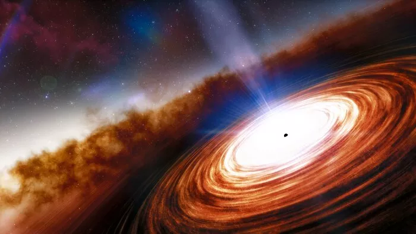

O que é um pulsar e como se formam?
Pulsar é uma estrela de nêutrons altamente magnetizada que emite pulsos regulares de radiação eletromagnética em diferentes comprimentos de onda, como rádio, luz visível, raios-X e raios gama. Eles são observados como fontes pontuais de luz que piscam em intervalos muito precisos e regulares, muitas vezes comparados ao funcionamento de faróis cósmicos.
Os pulsares são formados a partir do colapso gravitacional de uma estrela massiva durante uma supernova. Durante esse processo, o núcleo da estrela colapsa sob sua própria gravidade, formando uma estrela de nêutrons extremamente densa e compacta. Devido à conservação do momento angular, a estrela de nêutrons resultante geralmente apresenta uma rápida rotação.
A radiação emitida pelos pulsares é pensada para ser gerada por um feixe estreito de partículas carregadas, que são aceleradas pelos fortes campos magnéticos presentes na superfície da estrela de nêutrons. Essas partículas seguem as linhas de campo magnético e emitem radiação eletromagnética à medida que se movem ao longo delas. Quando o feixe de radiação se alinha com a linha de visão da Terra, somos capazes de detectar os pulsos de radiação em intervalos regulares.
Como detectamos pulsares?
- Observações de rádio: Os pulsares foram inicialmente descobertos por meio de observações de rádio. Antenas de rádio sensíveis podem detectar os pulsos de radiação emitidos pelos pulsares em comprimentos de onda de rádio.
- Observações ópticas e de luz visível: Embora menos comuns do que as observações de rádio, alguns pulsares também podem ser detectados em luz visível. Isso é feito usando telescópios ópticos para observar o brilho intermitente dos pulsares.
- Observações de raios-X e raios gama: Pulsares também emitem radiação em comprimentos de onda de raios-X e raios gama. Instrumentos sensíveis a esses comprimentos de onda, como telescópios de raios-X e detectores de raios gama, são usados para detectar pulsares nessas faixas.
- Pulsares de rádio de milissegundos: Estes são pulsares de rádio com períodos de pulsação extremamente curtos, da ordem de milissegundos. Eles são especialmente úteis para a detecção de ondas gravitacionais. Um método para detectá-los é através de pulsares de milissegundos em binárias de rádio.
- Detecção de modulação de sinais: Os pulsos de radiação dos pulsares são caracterizados por sua regularidade. Portanto, um método comum de detecção é procurar sinais que exibam modulação regular em sua intensidade ou em sua frequência.
Depois que um possível pulsar é detectado, os astrônomos geralmente confirmam sua natureza observando sua posição no céu e verificando se os pulsos são realmente regulares e consistentes. Uma vez confirmado, o pulsar pode ser estudado em detalhes para entender melhor sua estrutura interna, evolução e papel no cosmos.

Pulsares notaveis
- PSR 1919+21
- PSR 1913+16 - 1º pulsar binário a ser descoberto
- PSR B1937+21
- Cen X-3 - 1º pulsar de raios-X a ser descoberto
- SAX J1808.4-3658
- PSR B1257+12 - 1º pulsar com planeta a ser descoberto
- PSR J0737−3039
- SGR 1806-20
- PSR J1748-2446ad - pulsar com rotação mais rápida
- LGM-1 - 1º rádio-pulsar reconhecimento
- PSR J0108−1431
- SWIFT J1756.9-2508
- PSR B1509-58
Esta página foi editada pela última vez às 03h09min de 12 de março de 2024.
Este texto é disponibilizado nos termos da licença Atribuição-CompartilhaIgual 4.0 Internacional (CC BY-SA 4.0) da Creative Commons; pode estar sujeito a condições adicionais. Para mais detalhes, consulte as condições de utilização.